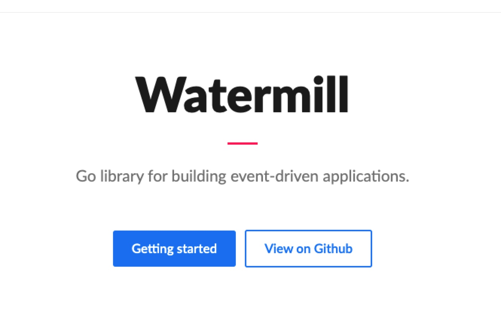
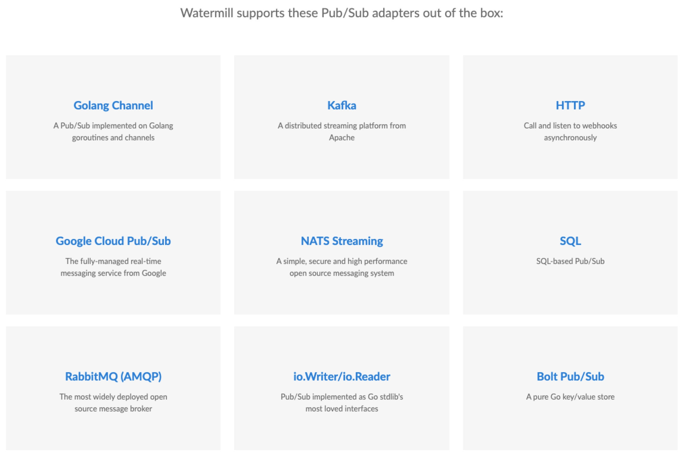
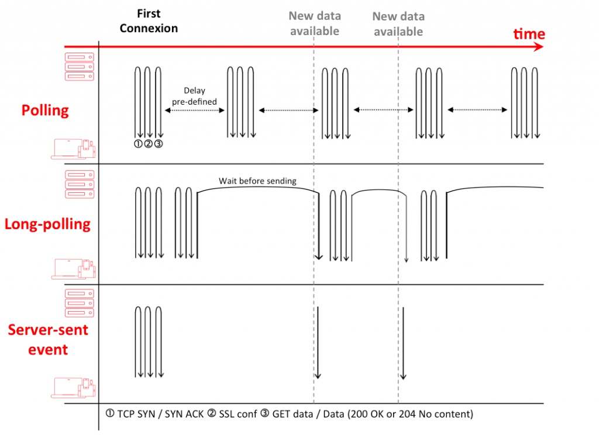
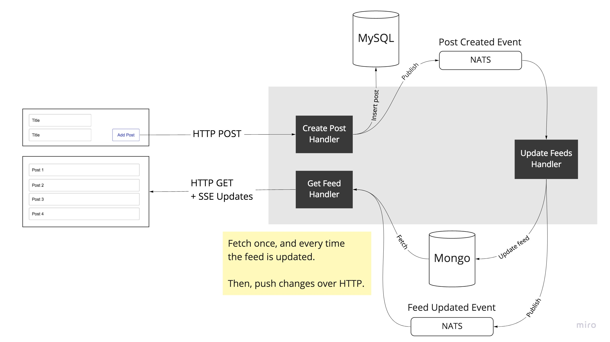

协同计算相关消息处理技术学习与实践

目录
消息（事件）通信分为前端和后端两类，前端接收以WS、RPC-WEB、SSE技术为典型代表，后端分发存在的技术相对较多，例如NATS、Kafka等，而Watermill提供了一种以PubSub形式来统一各种消息分发接口的通用技术框架，极大的简化和屏蔽了其他各类相关技术的复杂性。本文介绍了“协同计算”相关的重要消息处理技术实践方法。

后端通用分发技术
简介（目标）
Watermill 尝试让消息通信技术象HTTP路由一样简单。 Watermill aims to be the standard messaging library for Go, hiding all that complexity behind an API that is easy to understand.
- Watermill is a Go library for working efficiently with message streams. Watermill’s goal is to make communication with messages as easy to use as HTTP routers.
- It comes with a set of Pub/Sub implementations and can be easily extended by your own.
- Watermill also ships with standard middlewares like instrumentation, poison queue, throttling, correlation, and other tools used by every message-driven application.
- It can be used for event sourcing, RPC over messages, sagas, and whatever else comes to your mind.
提供统一接口（PubSub）
There are many third party and standard library tools which help to implement standardized RPC or HTTP communication in Golang. There are also multiple third party HTTP routers and frameworks. But when you want to build a message-driven application, there are no libraries which are infrastructure-agnostic and not opinionated. Watermill is a library which will work with any implementation of Publisher and Subscriber interfaces：
type Publisher interface {
Publish(topic string, messages ...*Message) error
Close() error
}
type Subscriber interface {
Subscribe(topic string) (chan *Message, error)
Close() error
}
目前已经支持以下通信协议：AMQP、Bolt、Firestore、GoogleCloud、HTTP、io.Reader/Writer、Kafka、NATS、SQL等。对于NATS jetstream的支持请参考（https://github.com/AlexCuse/watermill-jetstream）

支持类似于REST API 形式的处理函数注册方式（消息处理）
Watermill works with high level handler functions, with abstraction level similar to Golang HTTP handlers:
type HandlerFunc func(msg *Message) ([]*Message, error)
提供钩子中间件注册
Nowadays, any modern service must support metrics and distributed tracing. When building a message-driven application, often we need a posion queue or retrying support. Also, sometimes we need to limit the rate of message processing with throttling. Every one of these functionalities can be implemented by a middleware：
type HandlerMiddleware func(h HandlerFunc) HandlerFunc
事件驱动型系统开发
The basic idea behind event-driven applications stays always the same: listen for incoming messages and react to them. Watermill supports this behavior for multiple publishers and subscribers. （事件驱动系统的典型处理模式是监听和接收消息，然后响应）
The core part of Watermill is the Message. It is as important as http.Request is for the http package. Most Watermill features use this struct in some way. （核心对象是消息，类似于http.Request）
Even though PubSub libraries come with complex features, for Watermill it’s enough to implement two interfaces to start working with them: the Publisher and Subscriber. (核心接口是发布、订阅）
订阅消息
Subscribe expects a topic name and returns a channel of incoming messages. What topic exactly means depends on the PubSub implementation. 订阅消息，需要提供一个主题名，返回一个通道。
func main() {
pubSub := gochannel.NewGoChannel(
gochannel.Config{},
watermill.NewStdLogger(false, false),
)
messages, err := pubSub.Subscribe(context.Background(), "example.topic")
if err != nil {
panic(err)
}
go process(messages)
}
func process(messages <-chan *message.Message) {
for msg := range messages {
log.Printf("received message: %s, payload: %s", msg.UUID, string(msg.Payload))
// we need to Acknowledge that we received and processed the message,
// otherwise, it will be resent over and over again.
msg.Ack()
}
}
发布消息
消息类型采用 []byte，可以序列化任何类型的数据。 Watermill doesn’t enforce any message format. NewMessage expects a slice of bytes as the payload. You can use strings, JSON, protobuf, Avro, gob, or anything else that serializes to []byte. The message UUID is optional, but recommended, as it helps with debugging.
发布消息，需要提供一个主题名，和若干消息。 Publish expects a topic and one or more Messages to be published.
func publishMessages(publisher message.Publisher) {
for {
msg := message.NewMessage(watermill.NewUUID(), []byte("Hello, world!"))
if err := publisher.Publish("example.topic", msg); err != nil {
panic(err)
}
time.Sleep(time.Second)
}
}
消息路由（转发）
路由配置
Start with configuring the router, adding plugins and middlewares. 路由配置，需要完成对路由类型的设置，添加插件、消息中间件，绑定消息处理函数等工作。
func main() {
// 创建路由器
router, err := message.NewRouter(message.RouterConfig{}, logger)
if err != nil {
panic(err)
}
// 开始配置路由器
// 添加插件
// SignalsHandler will gracefully shutdown Router when SIGTERM is received.
// You can also close the router by just calling `r.Close()`.
router.AddPlugin(plugin.SignalsHandler)
// 添加内置消息中间件（钩子）
// Router level middleware are executed for every message sent to the router
router.AddMiddleware(
// CorrelationID will copy the correlation id from the incoming
// message's metadata to the produced messages
middleware.CorrelationID,
// The handler function is retried if it returns an error.
// After MaxRetries, the message is Nacked and it's up to the PubSub to resend it.
middleware.Retry{
MaxRetries: 3,
InitialInterval: time.Millisecond * 100,
Logger: logger,
}.Middleware,
// Recoverer handles panics from handlers.
// In this case, it passes them as errors to the Retry middleware.
middleware.Recoverer,
)
// For simplicity, we are using the gochannel Pub/Sub here,
// You can replace it with any Pub/Sub implementation, it will work the same.
pubSub := gochannel.NewGoChannel(gochannel.Config{}, logger)
// Producing some incoming messages in background
go publishMessages(pubSub)
// 绑定复杂消息处理函数
// AddHandler returns a handler which can be used to add handler level middleware
handler := router.AddHandler(
"struct_handler", // handler name, must be unique
"incoming_messages_topic", // topic from which we will read events
pubSub,
"outgoing_messages_topic", // topic to which we will publish events
pubSub,
structHandler{}.Handler,
)
// 绑定简单消息处理函数
// Handler level middleware is only executed for a specific handler
// Such middleware can be added the same way the router level ones
handler.AddMiddleware(func(h message.HandlerFunc) message.HandlerFunc {
return func(message *message.Message) ([]*message.Message, error) {
log.Println("executing handler specific middleware for ", message.UUID)
return h(message)
}
})
// 添加调试用途类型的内置消息处理函数
// just for debug, we are printing all messages received on `incoming_messages_topic`
router.AddNoPublisherHandler(
"print_incoming_messages",
"incoming_messages_topic",
pubSub,
printMessages,
)
// just for debug, we are printing all events sent to `outgoing_messages_topic`
router.AddNoPublisherHandler(
"print_outgoing_messages",
"outgoing_messages_topic",
pubSub,
printMessages,
)
// 启动路由器
// Now that all handlers are registered, we're running the Router.
// Run is blocking while the router is running.
ctx := context.Background()
if err := router.Run(ctx); err != nil {
panic(err)
}
}
消息处理函数（Handler）
支持以下三种类型的消息处理函数（handler）：
- 内置处理器
- 简单处理器，该处理函数几乎没有任何外部依赖，是一个简单函数
func(msg *message.Message) ([]*message.Message, error)
- 复杂处理器，该处理函数是一个方法函数，接收者可以包含外部依赖（例如数据库、日志等等）
type structHandler struct {
// we can add some dependencies here
}
func (s structHandler) Handler(msg *message.Message) ([]*message.Message, error) {
log.Println("structHandler received message", msg.UUID)
msg = message.NewMessage(watermill.NewUUID(), []byte("message produced by structHandler"))
return message.Messages{msg}, nil
}
前端实时接收技术
常用技术
- 同步轮训技术：Vue-polling
- 异步单向接收：Vue-sse
- 异步双向接收：Websocket

SSE 技术
Server-Sent Events 技术：SSE is a server push technology enabling a client to receive automatic updates from a server via an HTTP connection, and describes how servers can initiate data transmission towards clients once an initial client connection has been established. They are commonly used to send message updates or continuous data streams to a browser client and designed to enhance native, cross-browser streaming through a JavaScript API called EventSource, through which a client requests a particular URL in order to receive an event stream. The Server-Sent Events EventSource API is standardized as part of HTML5[1] by the W3C.
SSE 又称 EventSource 技术。
Websocket vs. SSE
WebSockets are bilateral (you don’t always need bi-direction), not HTTP (some proxy won’t let it go through) “protocol” without standards for error handling. SSE is mono-directional (server to client), HTTP protocol with error handling standards. Both improve hugely latency for users. From a server load point of view, we achieved better performance with SSE than WebSockets (a higher number of final users handled by one server).
SSE的优势：
- WS是双向技术, SSE是单向技术
- WS没有标准的出错处理方案，SSE遵循HTTP出错处理
- WS在某些情况下会被阻断，但是HTTP一般均可通过
- 两种技术都关注优化前端响应，但是从服务器负载角度来说，SSE性能优于WS技术
SSE的不足：
- WS支持二进制数据，而SSE仅仅支持文本数据（UFT8)
- One problem is that all browsers do not support EventSource
SSE 使用方法
A client subscribes to a “stream” from a server and the server will send messages (“event-stream”) to the client until the server or the client closes the stream. It is up to the server to decide when and what to send the client, for instance, as soon as data changes.
SSE(event-stream)协议
The event-stream is a simple stream of text data which must be encoded using UTF-8. Messages in the event-stream are separated by a pair of newline characters (“\n”). You can easily send JSON format without breaking the synthax! The following field names are defined in the specification:
-
Event: The event’s type. It will allow you to use the same stream for different content. A client can decide to “listen” only to one type of event or to interpret differently each event type.
-
Data: The data field for the message. You can put consecutive “data” lines.
-
ID: ID for each event-stream. Useful to track lost messages.
-
Retry: The time to use before the browser attempts a new connection after all connections are lost (in milliseconds). The reconnection process is automatic and is set by default at three seconds. During this reconnection process, the last ID received will be automatically sent to the server… something you would need to code by yourself with WebSockets or Long-polling.
-
“:” : if you start the message by a colon, it will be considered as comments
id: 12345
event: newuser
data: { \n
data: first name : John, \n
data: last name : Doe \n
data: }\n\n
前端处理
- 检查浏览器是否支持SSE
if(typeof(EventSource) !== “undefined”) {
//Yeah … SSE supported!
} else {
//wtf! Let’s make a polyfill
}
If the browser does not support SSE, you can use a Polyfill. （https://github.com/amvtek/EventSource）
- 代码样例
var source = new EventSource('/stats');
source.onopen = function() {
connectionOpen(true);
};
source.onerror = function () {
connectionOpen(false);
};
source.addEventListener('connections', updateConnections, false);
source.addEventListener('requests', updateRequests, false);
source.addEventListener('uptime', updateUptime, false);
source.onmessage = function (event) {
// a message without a type was fired
};
协同计算相关案例学习
前端自动刷新：web application using Server-Sent Events to support real-time refreshing.
请参考博客：https://cloud.tencent.com/developer/article/1829154

总结
后端消息分发技术选型思路是，优先采用Watermill构建消息接口，然后优先考虑GoChannel作为进程内部消息通信、优先选择NATS实现进程或微服务之间的消息通信，同时提供统一的面向前端推送的服务端口。前端消息接收技术选型思路是，需要根据不同场景分别处理，1）简单状态监测（尤其是部分单个模块页面的数据采集，例如某一个处理的进度检查），优先考虑轮训技术；2）社交聊天及其非文本数据推送场景，优先选择Websocket技术；3）数据页面实时刷新或协作实时同步更新，优先选择SSE，浏览器不支持的场景替换为WS。前端优先选择SuperVuex作为数据缓存。
参考文献
- https://github.com/ThreeDotsLabs/watermill/
- https://threedots.tech/post/introducing-watermill/
- https://github.com/AlexCuse/watermill-jetstream
- https://github.com/ThreeDotsLabs/watermill/tree/master/_examples/real-world-examples/server-sent-events
- https://html.spec.whatwg.org/multipage/server-sent-events.html#server-sent-events
- https://blog.axway.com/api-streaming/server-sent-events
- https://medium.com/js-dojo/integrating-server-sent-events-with-vuex-9de7c0dfb3f3
- https://github.com/tserkov/vue-sse
- https://github.com/amvtek/EventSource
- https://juejin.cn/post/7009079180482576420
- https://www.jianshu.com/p/3e2fe67e1f64
- https://github.com/euskadi31/go-sse
- https://cloud.tencent.com/developer/article/1829154
- https://blog.csdn.net/HOOKTTG/article/details/72867174
- https://www.kancloud.cn/idcpj/python/2037357